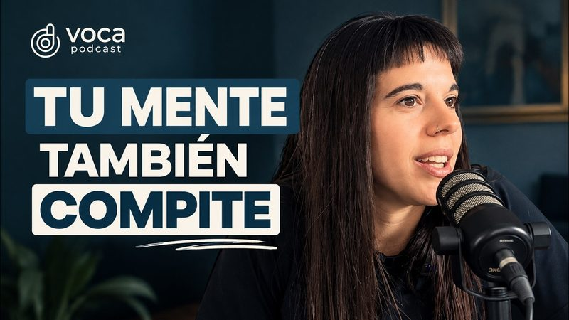

44 min
Malena Roizis · Psicóloga deportiva
Psicología deportiva: cómo manejar la presión y el miedo a fallar
La mente también entrena. Con la psicóloga Malena Roizis hablamos de la presión, el miedo a fallar, las lesiones y la confianza en el deporte.